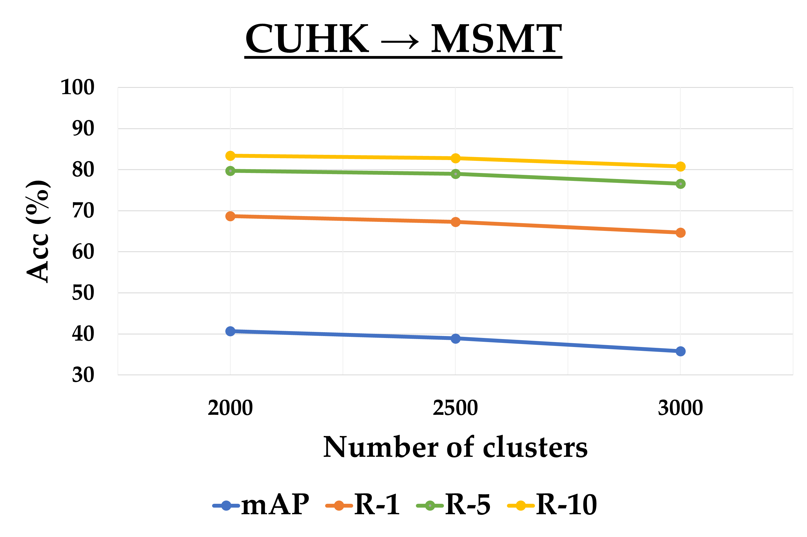

Overall
Figure 1. The overall method proposed in this study. First, the model is trained on a customized source domain dataset, after which the parameters of the pre-trained model are transferred to both the student and teacher networks as an initialization step for the next stage. During fine-tuning, the student model is trained, and the teacher model is updated through the Mean Teacher method. To optimize computational efficiency, only the teacher model is employed for inference.
Generate Training Data on Source Domain Using CycleGAN
Figure 2. Our process for creating a complete training set for the source domain is as follows: in Person ReID task, we first combine the training set (represented by green icons) and the test set (represented by dark green icons) from the source dataset to create a comprehensive set of real images. This combined set is then used to train a camera-aware style transfer model, which generates style-transferred images (blue icons for the training set and dark blue icons for the test set) that reflect the stylistic characteristics of the target cameras. The final training set for the source do-main is formed by merging the real images (green and dark green icons) with the style-transferred images (blue and dark blue icons). For Vehicle ReID, due to the simpler nature of vehicle features and the extensive number of cameras involved (with some datasets not speci-fying the number of cameras), we use domain-aware transfer models instead of camera-aware models. These models generate style-transferred images (orange icons for the training set and dark orange icons for the test set) that capture the target domain’s style. The final source domain training set is then constructed by integrating the real images (green and dark green icons) with the style-transferred images (orange and dark orange icons).
Camera-Aware Style Transfer

Figure 3. The camera-aware style-transferred samples from Market-1501 and CUHK03 datasets. Each original image, captured by a specific camera, has been transformed to match the styles of the other five cameras in Market-1501 and one camera in CUHK03, covering both training and test data. By applying the style transfer models, these transformations produce style-transferred images as outputs based on the real input images.
Domain-Aware Style Transfer
Figure 4. The domain-aware style-transferred samples from VeRi-776 [1] and VehicleID [71] datasets. Each original real image from the source domain dataset has been transformed to match the styles of the target domain dataset. By applying domain-aware style transfer models, the model trained in the pre-training stage will be able to capture the style and features of the target domain.
Source Pretraining
Figure 5. The comprehensive training process employed during the fully supervised pre-training stage. A ResNet-based model, adaptable to various backbone sizes (from ResNet18 and 34 to ResNet50, 101, and 150), serves as the backbone architecture within our training framework.
Data Adapter Component
Figure 6. Data adapter component. The transformations of random flipping, random global grayscale, random local grayscale and random erasing will be controlled by probability parameters. In addition, random erasing is only applied in the fine-tuning stage.
CORE-ReID V2 (Target Fine-tuning)
Figure 7. The comprehensive overview of our CORE-ReID V2 framework. The data adapter will pre-process the data depending on the type of object. We integrate local and global features using the enhanced Ensemble Fusion++ component. Specifically, the Efficient Channel Attention Block (ECAB) and Simplified Efficient Channel Attention Block (SECAB) are utilized to boost local and global feature extraction, respectively. By using Bi-directional Mean Feature Normalization (BMFN), the framework effectively merges features from the original image x_(T,i) and its horizontally flipped counterpart x_(T,i)^', generating a fused feature φ_l,l∈{top,bottom}. The student network is trained in a supervised manner using pseudo-labels, while the teacher network is updated through a Mean Teacher approach, which computes the temporal average of the student network's weights. Especially, the flipped image features are processed identically to the original image's features until they reach the BMFN stage, ensuring consistent feature fusion.
Ensemble Fusion and Ensemble Fusion++
Figure 8. The comparison between Ensemble Fusion in CORE-ReID [11] and proposed Ensemble Fusion++ component. ς_top and ς_bottom features are passed through the ECAB, τ_global feature is passed via the SECAB to produce the channel attention maps by exploiting the inter-channel relationship of features which helps to enhance the features.
ECAB and SECAB
Figure 9. TComparison of ECAB and SECAB. The structure of our SECAB is similar to ECAB [11] but simpler, the module only takes the Shared Multilayer Perceptron into account. It has odd h hidden layers, where the first (h-1)/2 layers are reduced in size with the reduction rate r, and the last (h-1)/2 layers will be expanded with the same rate r.
Feature Maps in Person ReID
(b)
(c)
(d)
Figure 10. Feature maps visualization using Grad-CAM [111]. (a), (b), (c), and (d) illustrate the feature maps of those pairs on Market➝CUHK, CUHK➝Market, Market➝MSMT, and CUHK➝MSMT, respectively.
Feature Maps in Vehicle ReID
(a)
(b)
Figure 11. Feature maps visualization using Grad-CAM [111]. (a), (b) illustrate the feature maps of those pairs on VehicleID➝VeRi-776 and VeRi-776➝ VehicleID respectively.
Accuracy
(a)
(b)
(c)
(d)

(e)
(f)
Figure 12. Impact of clustering parameter M_(T,j). Results on (a) Market → CUHK, (b) CUHK → Market, (c) Market → MSMT, (d) CUHK → MSMT, (e) VehicleID → VeRi-776, and (f) VeRi-776 → VehicleID Small.
SECAB Settings

Table. Experimental results validating the effectiveness of SECAB in our proposed framework. The clustering parameter values (M_(T,j)) are derived from the study of K-means clustering settings. Bold values represent the better results.
Backbone Configurations
(a)
(b)
(c)
(d)
Figure 14. Impact of the backbone settings. Results on (a) Market → CUHK, (b) CUHK → Market, (c) Vehi-cleID → VeRi-776, and (d) VeRi-776 → VehicleID Small show that ResNet101 backbone gives the best overall results.